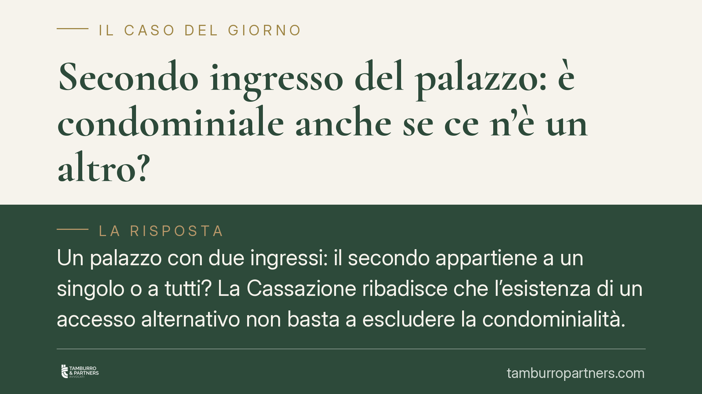

Secondo ingresso del palazzo: è condominiale anche se ce n'è un altro?
Un palazzo con due ingressi: il secondo appartiene a un singolo o a tutti? La Cassazione ribadisce che l'esistenza di un accesso alternativo non basta a escludere la condominialità. La presunzione fissata dall'art. 1117 c.c. resta solida e può essere superata solo dal titolo costitutivo. Un principio che incide su liti ricorrenti tra condòmini e condominio.

Il principio di diritto
La questione è tanto frequente quanto insidiosa. In molti edifici esistono due ingressi: uno principale, uno secondario. Quando un condòmino rivendica la proprietà esclusiva del secondo accesso, l'argomento più usato è semplice: «tanto c'è già l'altro, quindi questo non serve a tutti».
La giurisprudenza di legittimità, in linea con l'orientamento consolidato della Corte di cassazione, respinge questo ragionamento. L'esistenza di un accesso alternativo non è sufficiente, da sola, a escludere la natura condominiale dell'altro ingresso. Il punto decisivo non è l'utilità pratica del bene, ma la sua titolarità.
Inquadramento normativo
L'art. 1117 del codice civile elenca le parti dell'edificio che si presumono comuni: tra queste, «tutte le parti dell'edificio necessarie all'uso comune» e, in particolare, gli ingressi, i portoni, gli andròni e gli accessi.
Si tratta di una presunzione relativa: la legge dà per comuni questi beni salvo prova contraria. Ma la prova contraria ha una forma precisa. Non può essere offerta dimostrando che il bene è superfluo o poco usato; deve risultare dal titolo, cioè dall'atto costitutivo del condominio (tipicamente il primo atto di frazionamento e vendita delle unità immobiliari, o il regolamento di natura contrattuale).
È qui che entra in gioco il momento genetico del condominio: la natura dei beni si cristallizza nell'istante in cui l'edificio, prima appartenente a un unico proprietario, viene suddiviso tra più soggetti. È a quella data che occorre guardare per stabilire se un ingresso sia stato riservato a un singolo o lasciato alla collettività dei condòmini.
Utilità e titolarità: due piani distinti
Qui sta il cuore della distinzione. Un conto è l'utilità del bene: quanto serve, se è indispensabile o accessorio, se viene usato da uno o da tutti. Altro conto è la titolarità: a chi appartiene.
Un ingresso può essere poco frequentato e rimanere comunque condominiale, perché la proprietà non si perde per disuso né si acquista per il solo fatto di servirsene più degli altri. La ridondanza funzionale — avere già un altro accesso — non sposta la titolarità. Confondere i due piani è l'errore ricorrente di chi rivendica la proprietà esclusiva.
Implicazioni pratiche
Le conseguenze sul piano processuale sono nette e riguardano la distribuzione dell'onere probatorio.
Il condominio che afferma la natura comune dell'ingresso non deve dimostrare granché: gli basta invocare la presunzione dell'art. 1117 c.c., eventualmente provando che il bene rientra tra quelli elencati dalla norma.
Il condòmino che rivendica la proprietà esclusiva, invece, sopporta un onere ben più gravoso: deve produrre un titolo che, al momento della nascita del condominio, abbia riservato quell'ingresso a sé o a un proprio dante causa. In assenza di un titolo chiaro, la rivendica è destinata a cadere.
Per chi gestisce un condominio, significa che la posizione collettiva è tendenzialmente solida. Per chi rivendica un bene come proprio, significa che le argomentazioni sull'uso esclusivo o sull'inutilità del bene per gli altri non spostano l'esito: serve un documento.
Cosa fare in concreto
- Recuperare il titolo costitutivo del condominio: primo atto di vendita delle unità, atto di frazionamento, regolamento allegato.
- Verificare come l'ingresso contestato sia descritto in quegli atti alla data di nascita del condominio, non nella situazione attuale.
- Controllare le planimetrie catastali d'impianto e i successivi aggiornamenti, per ricostruire lo stato originario dei luoghi.
- Distinguere, nelle proprie valutazioni, tra uso del bene e proprietà del bene: sono piani diversi e solo il secondo decide la lite.
- Per valutare la propria posizione è opportuno un esame tecnico della documentazione contrattuale e catastale prima di avviare o resistere a un contenzioso.
---
*Contributo informativo a cura di Tamburro & Partners Avvocati — Avv. Giuseppe Tamburro. Non costituisce parere legale.*
Ogni condominio ha una storia a sé.
Se gestisci un'amministrazione e vuoi un confronto su una specifica questione condominiale, scrivi allo studio. Ti rispondiamo entro un giorno lavorativo.